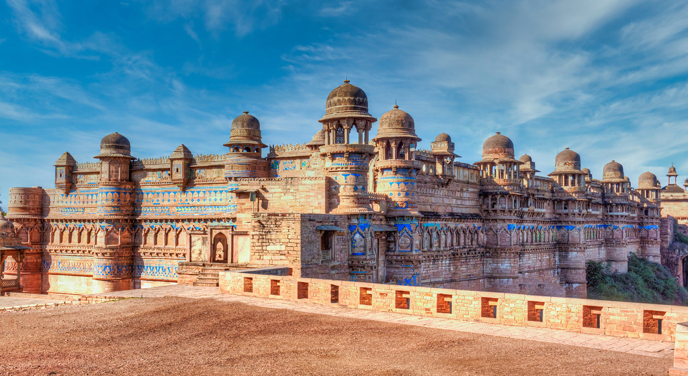
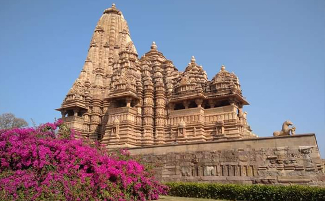
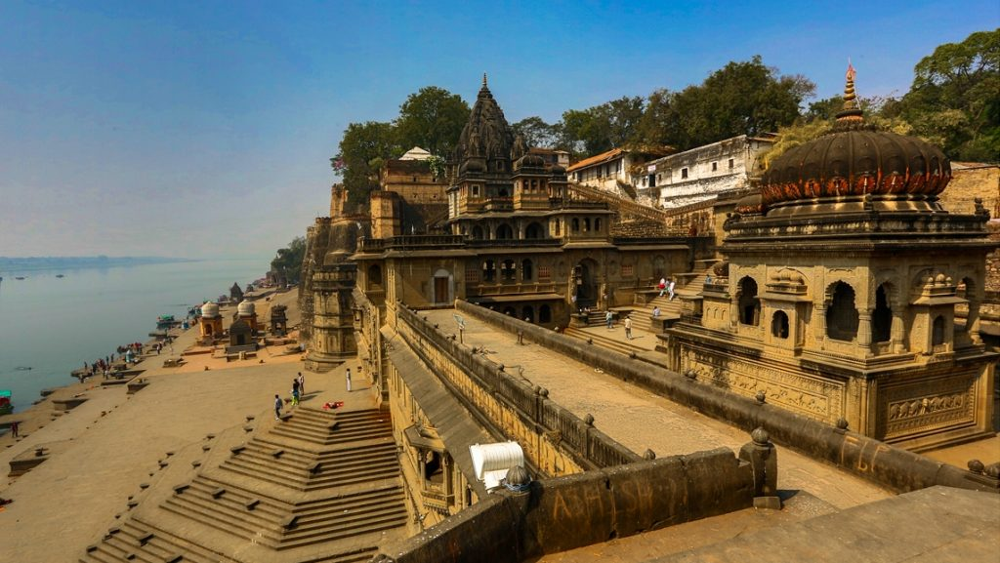
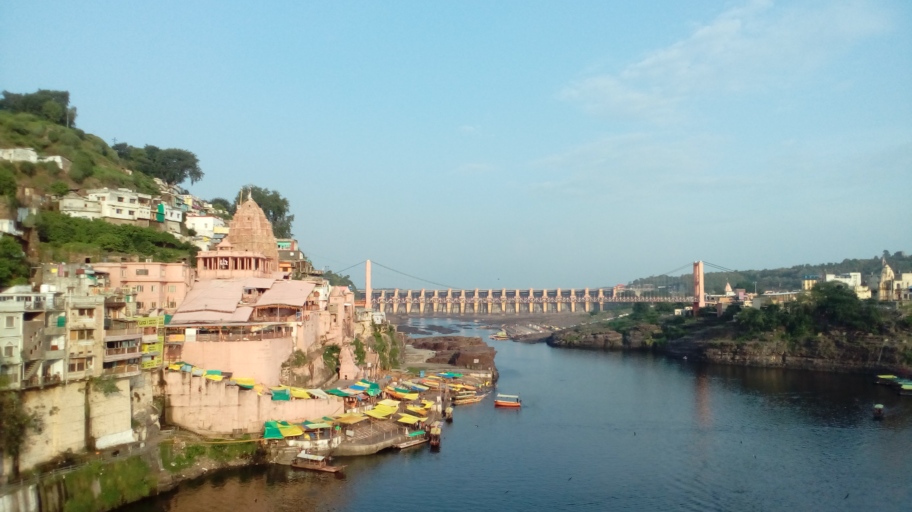
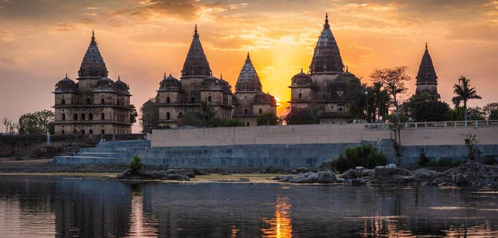
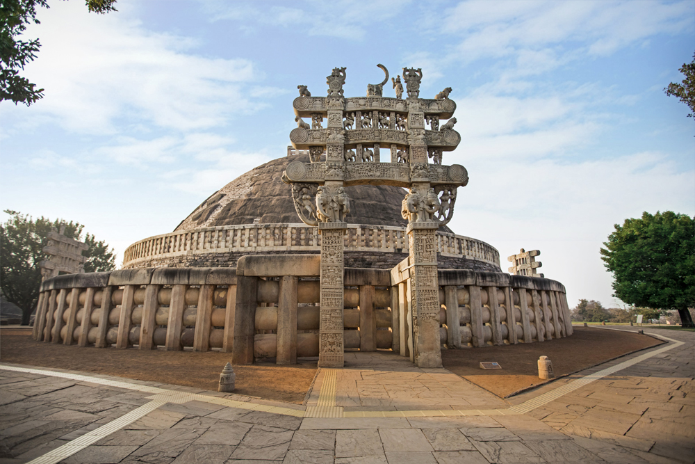

GWALIOR FORT
Gwalior Fort, situated on top of a hill, finds its place among the best fortresses of India. It is also considered to be one of the most impenetrable forts in the country. Known for its great architecture and rich past, Gwalior Fort is a must-visit attraction when visiting Central India.
KANHA NATIONAL PARK

Kanha National Park, also known as Kanha Tiger Reserve, is a vast expanse of grassland and forest in the central Indian state of Madhya Pradesh. Tigers, jackals and wild pigs can be spotted in Kanha Meadows. The elevated plateau of Bamhnidadar is home to birds of prey. Animals often gather at the watering holes of Sondar Tank and Babathenga Tank. The park’s flora and fauna are documented in the park's Kanha Museum.
KHAJURAHO TEMPLES
The Khajuraho Group of Monuments are a group of Hindu and Jain temples in Chhatarpur district, Madhya Pradesh, India, about 175 kilometres southeast of Jhansi. They are a UNESCO World Heritage Site.
MAHESHWAR
Maheshwar is a town in Khargone district of Madhya Pradesh state, in central India. It is located on State Highway-38,13.5 km east of National Highway 3 and 91 km from Indore, the commercial capital of the state. The Town lies on the north bank of the Narmada River.
OMKARESHWAR
Omkareshwar is a Hindu temple dedicated to God Shiva. It is located in Khandwa in Indian state Madhya Pradesh. It is one of the 12 revered Jyotirlinga shrines of Shiva. Known as one of the holiest centers of pilgrimage, there is a wealth of places to visit in Omkareshwar. Offering a unique confluence of religion and serenity, this place is home to the famous Jyotirlinga which is placed in the sacred temple of Shri Omkar Mandhata.
ORCHHA
Orchha is a town in Niwari district of Madhya Pradesh state, India. The town was established by rajput ruler Rudra Pratap Singh some time after 1501, as the seat of an eponymous former princely state of covering parts of central & north India, in the Bundelkhand region.Orchha is the erstwhile capital city of the Bundela rulers. The town is steeped in history and is famous for its palaces and temples built in the 16th and 17th centuries. The architectural splendor of the monuments in Orchha reflects the glory of its rulers.
SANCHI STUPA
It is one of the oldest Buddhist monuments in the country and the largest stupa at the site. The Great Stupa at Sanchi, India. The Great Stupa (also called stupa no. 1) was originally built in the 3rd century bce by the Mauryan emperor Ashoka and is believed to house ashes of the Buddha.